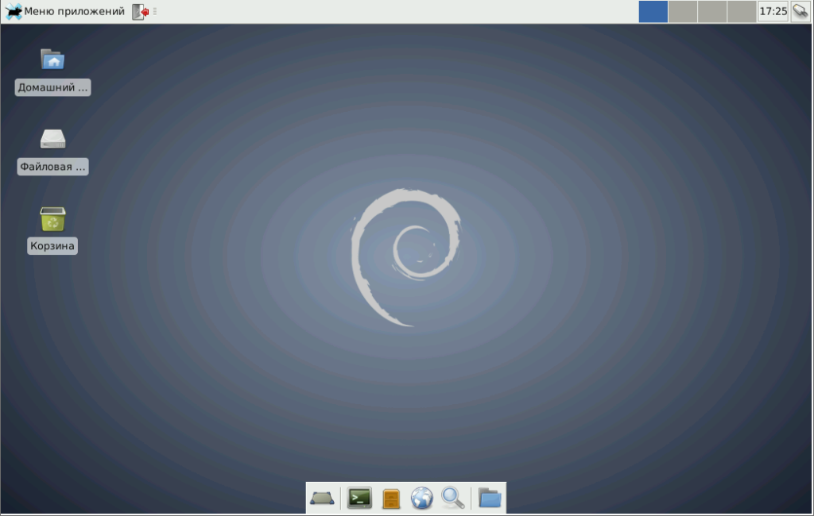
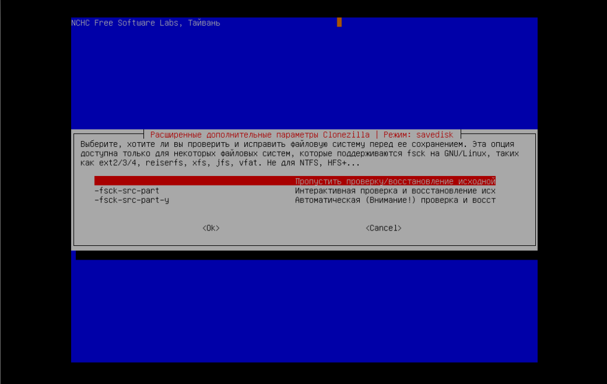

Клонирование настроенной операционной системы при помощи Clonezilla
16.07.2016 Информатизация в школе 4 комментария Backup, Clonezilla, linux, SSH
VKTelegramWhatsAppFacebookFacebook MessengerTwitterMail.RuOdnoklassnikiEmail
Как говорится хороший системный администратор — это ленивый системный администратор. Для любого сисадмина не проблема установить и настроить систему на одном компьютере, проблема начинается тогда, когда таких компьютеров более 10. И на каждом нужно сделать одно и то же. Но как известно лень — двигатель прогресса и на помощь к нам приходит Clonezilla.
Clonezilla — свободное программное обеспечение с открытым исходным кодом, предназначенное для клонирования дисков и отдельных разделов жёсткого диска, а также создания резервных копий и аварийного восстановления системы.
Итак задача: размножить уже настроенную операционную систему со всем необходимым софтом на N-ое количество машин.
Процедура проводится в два этапа:
I. Подготовка образа и сохранение его на сервере.
II. Копирование сохраненного образа с сервера на новую машину.
I. Подготовка образа и сохранение его на сервере.
1. Подготовим систему для клонирования, т.е. установим операционную систему, весь необходимый софт, выполним типовые настройки по максимуму, чтобы после клонирования максимально быстро донастроить систему и ввести в эксплуатацию компьютер (Для этой цели можно воспользоваться VirtualBox). Я проделаю это на примере Debian (хотя у себя мы, активно, создаем копии Windows и Linux).

2. Скачиваем образ последней версии Clonezilla и записываем его на диск или флешку. Перезагружаем компьютер и загружаемся с нашего носителя и выбираем пункт Clonezilla live (Default settings, VGA 800×600)
3. Выбираем язык системы:
4. Оставляем раскладку клавиатуры по умолчанию:
5. Запускаем систему Clonezilla:
6. Выбираем пункт: device-image работать с дисками или разделами, используя образы:
7. Теперь нужно указать где мы будем хранить нашу копию. Так как у меня сервера на Linux, то я выбираю пункт ssh-server Использовать SSH сервер. На сервере нужно подготовить директорию для хранения образов копий систем.
8. Так как мы будем передавать данные по сети, система запросит произвести сетевые настройки для Clonezilla. Так как у меня в сети работает сервер DHCP — то мне не нужно задавать настройки вручную:
9. Указываем имя или ip сервера, на котором мы будем хранить копию:
10. Указываем порт подключения, у нас он стандартный — 22:
11. Указываем имя пользователя, под которым будем подключаться к серверу по протоколу ssh (в моем случае это school):
12. Указываем точный путь до каталога на сервере, где мы будем хранить копии:
13. Осталось ввести пароль пользователя (в нашем случае это school) для подключения к серверу по ssh-протоколу:
14. Если мы все сделали правильно, то произойдет подключение к серверу и нам нужно будет нажать Enter:
16. Выбираем уровень настроек Beginner — начальный уровень настроек:
17. На следующем этапе выбираем первый пункт — savedisk Сохранить локальный диск как образ:

18. Указываем имя сохраняемого образа:

19. Указываем какой именно диск мы будем сохранять:
20. Выбираем уровень проверки образа, обычно все проходит без ошибок, поэтому, для экономии времени, выбираем первый пункт:

21. Далее нажимаем Enter и соглашаемся с системой (yes):
22. И наблюдаем за процессом снятия образа с нашей системы:
23. После окончания процесса снятия образа и сохранения его на сервере перезагружаем систему или выключаем компьютер:
II. Копирование сохраненного образа с сервера на новую машину.
При восстановлении готового образа на новую машину пункты с 1 по 16 абсолютно совпадают с пунктом «I. Подготовка образа и сохранение его на сервере«.
1. При достижении пункта 16 выбираем пункт restoredisk Восстановить образ на локальный диск:
2. Выбираем образ нужной системы:
3. Выбираем диск, на который будет происходит запись. желательно его подготовить на компьютере и отформатировать.
4. Соглашаемся с предупреждениями:
5. Наблюдаем процедуру копирования образа на локальный диск нового компьютера:
6. Перезагружаем Clonezilla:
7. Загружаем клонированную систему на новом компьютере и производим необходимые настройки.
Производим действия, описанные в пункте «II. Копирование сохраненного образа с сервера на новую машину» на каждой и N-ого количества машин.
Видеоинструкция:
Источники:
Интересная статья? Поделитесь ей с друзьями!
Похожие записи:
OwnCloud - настраиваем безопасный доступ при помощи SSL-шифрования
Apache2 - настройка для работы с несколькими сайтами в Debian
Доступ к серверу по ssh без пароля
VKTelegramWhatsAppFacebookFacebook MessengerTwitterMail.RuOdnoklassnikiEmail